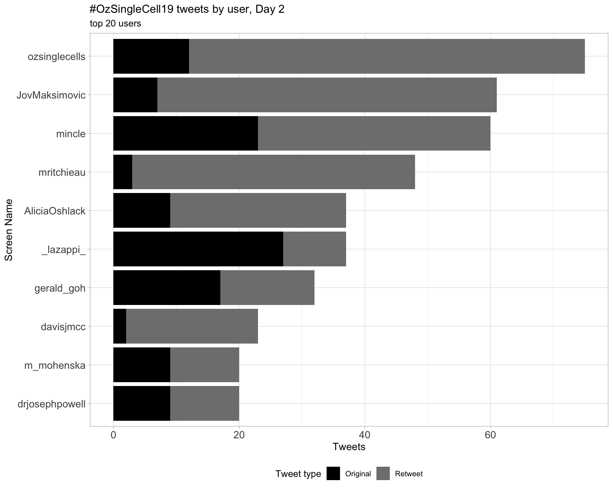
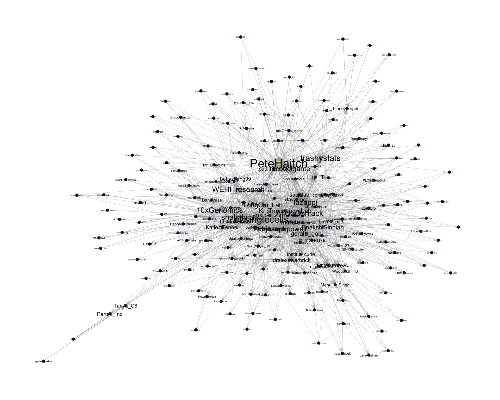
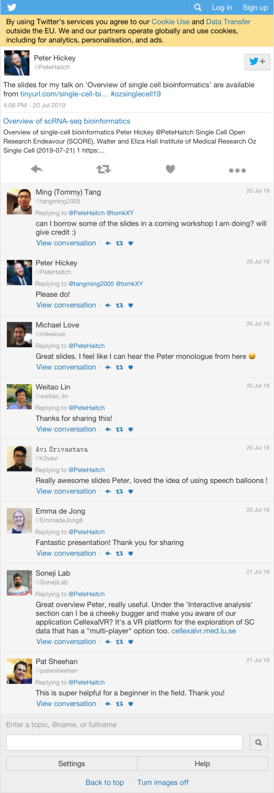
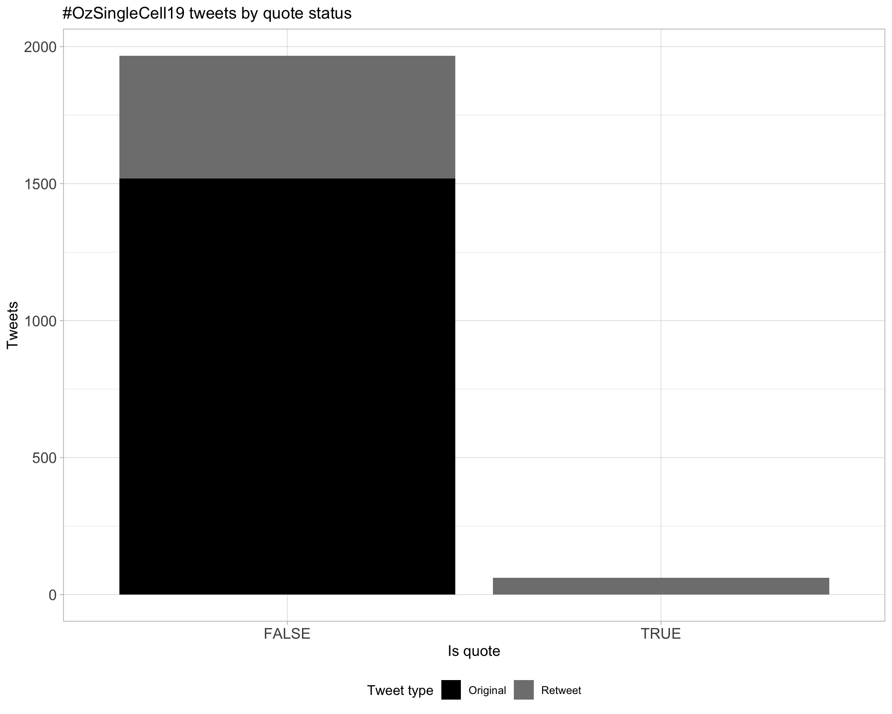
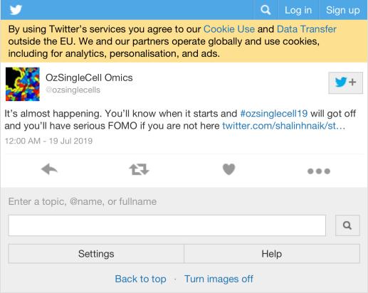

OzSingleCell2019
Oz Single Cell conference 2019
2019-07-24 08:58:56
Parameters
| Parameter | Value |
|---|---|
| hashtag | #OzSingleCell19 |
| start_day | 2019-07-21 |
| end_day | 2019-07-23 |
| timezone | Australia/Melbourne |
| theme | theme_light |
| accent | black |
| accent2 | #7F7F7F |
| kcore | 3 |
| topics_k | 6 |
| bigram_filter | 3 |
| fixed | TRUE |
| seed | 1 |
1 Introduction
An analysis of tweets from the #OzSingleCell19 hashtag for the Oz Single Cell conference 2019. The first day was a workshop and the main conference was day 2 and 3.
A total of 2028 tweets from 450 users were collected using the rtweet R package.
2 Timeline
2.1 Tweets by day

2.2 Tweets by day and time
Filtered for dates 2019-07-21 - 2019-07-23 in the Australia/Melbourne timezone.

3 Users
3.1 Top tweeters
Overall

Original
Retweets

3.2 Retweet proportion
3.3 Top tweeters timeline

3.4 Top tweeters by day
Overall
Day 1

Day 2

Day 3

Original
Day 1

Day 2

Day 3

Retweets
Day 1

Day 2

Day 3

4 Sources

5 Networks
5.1 Replies
The “replies network”, composed from users who reply directly to one another, coloured by PageRank.

5.2 Mentions
The “mentions network”, where users mention other users in their tweets. Filtered for a k-core of 3. Node colour and size adjusted according to PageRank score.

6 Tweet types
6.1 Retweets
Proportion

Count
Top 10
| screen_name | text | retweet_count |
|---|---|---|
| PeteHaitch | The slides for my talk on ‘Overview of single cell bioinformatics’ are available from https://t.co/pXz6ooQRGW #ozsinglecell19 | 117 |
| trashystats | Did you know that your dimension reduction plots might be obscuring information? Not with #rstats package schex (https://t.co/7WaxV4x4yQ) #ozsinglecell19 https://t.co/5eW9W689tT | 68 |
| scottgigante | Survived my 30-minute sprint through “Machine Learning for Biologists” at #ozsinglecell19! Slides and notebook are available at https://t.co/HsFAYDv4sQ | 40 |
| PeteHaitch | Come work with me on single cell bioinformatics! We’ll soon be advertising a position at @WEHI_research to work on this and other exciting projects. Happy to chat if you’re at #ozsinglecell19 | 31 |
| PeteHaitch | Those interested in the nitty gritty of scRNA-seq normalisation will enjoy reading Aaron Lun’s secret blog https://t.co/DJ1Wq6ggzv #ozsinglecell19 | 30 |
| drjosephpowell | Interested in a postdoc or bioinformatician position and at #ozsinglecell19 ? We have both open. Come find me for a chat or send me a DM. https://t.co/8ptfdAkpq1 https://t.co/1v2gsnPDef | 24 |
| ozsinglecells | #ozsinglecell19 is going to be huge! We have 28 talks and 60 posters. You can now upload your posters and talks to our new @F1000Research channel! https://t.co/aZQ5KEP2yY | 18 |
| lazappi | First #ozsinglecell19 keynote from @satijalab #sketchnotes https://t.co/YpOpqWt9kN | 17 |
| shalinhnaik | It’s happening people #ozsinglecell19 https://t.co/s0R9OlDcuL | 15 |
| PeteHaitch | To round out a great session on single cell bioinformatics, @scottgigante with the unenviable task of teaching us machine learning in 30 mins Check out his teaching materials and slides https://t.co/wzXZnHlDyu #ozsinglecell19 | 14 |
Most retweeted

6.2 Likes
Proportion

Count
Top 10
| screen_name | text | favorite_count |
|---|---|---|
| PeteHaitch | The slides for my talk on ‘Overview of single cell bioinformatics’ are available from https://t.co/pXz6ooQRGW #ozsinglecell19 | 370 |
| Dr_Heather_Lee | Very sorry to be missing this year’s meeting #ozsinglecell19 @ozsinglecells, but my hands are full with a major project at the moment. In the last year I turned one single cell into… https://t.co/PZkkpftiLP | 201 |
| trashystats | Did you know that your dimension reduction plots might be obscuring information? Not with #rstats package schex (https://t.co/7WaxV4x4yQ) #ozsinglecell19 https://t.co/5eW9W689tT | 194 |
| shalinhnaik | It’s happening people #ozsinglecell19 https://t.co/s0R9OlDcuL | 124 |
| scottgigante | Survived my 30-minute sprint through “Machine Learning for Biologists” at #ozsinglecell19! Slides and notebook are available at https://t.co/HsFAYDv4sQ | 109 |
| PeteHaitch | Those interested in the nitty gritty of scRNA-seq normalisation will enjoy reading Aaron Lun’s secret blog https://t.co/DJ1Wq6ggzv #ozsinglecell19 | 78 |
| shalinhnaik | Thank you sponsors, speakers, OC, my lab, helpers, and my partners in crime @AliciaOshlack @drjosephpowell for a fantastic #ozsinglecell19. Most importantly thank YOU, the participants. Without your passion, intellect and openness, this would not be possible. See you next year! | 51 |
| 10xGenomics | 10x Co-founder and CSO Ben Hindson, was invited to speak at the #ozSingleCell19 Conference Dinner yesterday evening. A native of Australia, Ben’s inspirational story of how he co-founded 10x Genomics resonated powerfully with the attendees back home. https://t.co/GBMH2mhkIm | 48 |
| ozsinglecells | #ozsinglecell19 is going to be huge! We have 28 talks and 60 posters. You can now upload your posters and talks to our new @F1000Research channel! https://t.co/aZQ5KEP2yY | 46 |
| PeteHaitch | Come work with me on single cell bioinformatics! We’ll soon be advertising a position at @WEHI_research to work on this and other exciting projects. Happy to chat if you’re at #ozsinglecell19 | 46 |
Most likes
6.3 Quotes
Proportion

Count

Top 10
| screen_name | text | quote_count |
|---|---|---|
| ozsinglecells | It’s almost happening. You’ll know when it starts and #ozsinglecell19 will got off and you’ll have serious FOMO if you are not here https://t.co/YWhTDrdh99 | 3 |
| DawnSLin | Can’t wait! First day back to work and first conference #postPhD. Excellent program, gonna be two days of great science!! #OzSingleCell19 https://t.co/v2IlcF2IOP | 3 |
| bettyzhang99 | Just wait until you see the #OzSingleCell19 temporary tattoos!!! They are üî•üî•üî• Can‚Äôt wait to attend the Sunday workshop! ü§ó https://t.co/vo3aTxOWbC | 3 |
| ozsinglecells | Let us know when you have submitted your poster or talk to the @F1000Research Oz Single Cell channel so we can all admire it! #ozsinglecell19 https://t.co/aZQ5KEP2yY https://t.co/95XfA3wUXV | 2 |
| AliciaOshlack | This is the only way to do posters IMO. Poster sessions are for chatting and üç∑ #ozsinglecell19 https://t.co/sgJr6AUhNz | 2 |
| drjosephpowell | One of the things I have enjoyed the most since we started oz single cell (and ACPC) is the openness and sharing between often very different disciplines. We all benefit from this! And we should resist possible barriers being created #ozsinglecell19 https://t.co/vKIrgRyIp8 | 2 |
| ScienceJill | Yes x 1000! Our most successful customers are fluent in both. #ozsinglecell19 https://t.co/w2jw4d7vJ0 | 2 |
| ozsinglecells | Heaps of computers for heaps of cells #ozsinglecell19 https://t.co/v8Ztcy7cSo | 2 |
| ElinSGrayPhD | ECR @weitao_lin attending the #ozsinglecell19 workshop. Awesome initiative! https://t.co/oqoWcWT95g | 2 |
| ozsinglecells | #ozsinglecell19 https://t.co/00MH5w2dyE | 2 |
Most quoted

7 Media
Proportion

Top 10
| screen_name | text | favorite_count |
|---|---|---|
| Dr_Heather_Lee | Very sorry to be missing this year’s meeting #ozsinglecell19 @ozsinglecells, but my hands are full with a major project at the moment. In the last year I turned one single cell into… https://t.co/PZkkpftiLP | 201 |
| trashystats | Did you know that your dimension reduction plots might be obscuring information? Not with #rstats package schex (https://t.co/7WaxV4x4yQ) #ozsinglecell19 https://t.co/5eW9W689tT | 194 |
| shalinhnaik | It’s happening people #ozsinglecell19 https://t.co/s0R9OlDcuL | 124 |
| 10xGenomics | 10x Co-founder and CSO Ben Hindson, was invited to speak at the #ozSingleCell19 Conference Dinner yesterday evening. A native of Australia, Ben’s inspirational story of how he co-founded 10x Genomics resonated powerfully with the attendees back home. https://t.co/GBMH2mhkIm | 48 |
| scottgigante | “Bioinformatics is the Australian platypus” – @PeteHaitch at #ozsinglecell19 https://t.co/FInrdm7Lx6 | 43 |
| lazappi | First #ozsinglecell19 keynote from @satijalab #sketchnotes https://t.co/YpOpqWt9kN | 43 |
| shalinhnaik | #ozsinglecell19 https://t.co/DyaYWNp7qa | 37 |
| ozsinglecells | Childcare room all ready and nannies waiting for our little attendees #ozsinglecell19 https://t.co/52aBi65cqa | 36 |
| shalinhnaik | friends who science together party together @jonatcoquet @MartinGuilliams #ozsinglecell19 https://t.co/uBco7kwA8O | 35 |
| MartinGuilliams | Read single cell papers on my way to #OZSingleCell19 and I often miss meaningful biology. But not for the LAM paper from @IdoAmitLab & @EranElinav. WHAT.A.PAPER! From human to mouse. Disease kinetic, Spatial localization, Ontogeny, role of TREM2, Function in disease. RESPECT! https://t.co/aaAb5nIc22 | 35 |
7.1 Most liked image

8 Tweet text
8.1 Word cloud
The top 100 words used 3 or more times.

8.2 Bigram graph
Words that were tweeted next to each other at least 3 times.
8.3 Topic modelling
Top 10 words associated with 6 topics identified by LDA.

8.3.1 Representative tweets
Most representative tweets for each topic
Topic 1
| screen_name | text | gamma |
|---|---|---|
| dralexswarbrick | Incredible talk from @Manu___Singh, postdoc at the Garvan Institute, finding the ‚Äòrogue cells‚Äô driving autoimmunity pathology. Single cell DNA&RNA Seq, BCR repertoire analysis and functional in vitro and in vivo assays. ü§Ø!!! #ozsinglecell19 | 0.9930506 |
| Tanya_C8 | This was well received at our demo today üòö¬†@Partek_Inc table at #ozsinglecell19 , colouring cells with multiple genes on the same plot and selecting them with lasso tool, cell classification process in sc analysis made easier with Partek Flow point and click interface https://t.co/7Rg4YQpRrO | 0.9927375 |
| mincle | The method follows cell division and numbers of divisions with cell transcriptional phenotype - concludes that population heterogeneity is driven by differences in founder cells. For In vitro blood, clonal families populate different mature cell types. #ozsinglecell19 | 0.9927375 |
| DaneVass | @PeteHaitch Great talk today at #ozsinglecell19 ! Do you typically analyse data locally for your single cell projects? With multiple tools now able to speed up analyses post-count table computation, if/when should one move to a server? Is it simply when cell numbers get huge? | 0.9923948 |
| Tanya_C8 | Filter out low-quality cells (doublets, cells damaged during cell isolation, or cells with too few reads) is important in single cell data analysis. Take a look on how to use these interactive filters in Partek Flow @Partek_Inc table at #ozsinglecell19 https://t.co/sdaWyZmnjR | 0.9923948 |
| TomAsh_1 |
Cool idea for #ozsinglecell19 Our (@SydneyCytometry) workflow for clustering and visualising high-dim cytometry data (https://t.co/XG4jKLS30B, workflow script, not a package) and our time-series clustering algorithm by Givanna Putri (https://t.co/DLsSgnVlOx). https://t.co/rRykOEZOWx |
0.9923948 |
| TomAsh_1 | #ozsinglecell19 do you like pseudo-time analysis? Why not actual-time analysis? Givanna Putri from our group created a time-series clustering tool called ‘ChronoClust’ – GitHub: https://t.co/sQu9X9sOGp, link to the paper at https://t.co/vEYUe8hKcF. | 0.9920182 |
| Tanya_C8 | In time for #ozsinglecell19 too is analysis of Gene Expression with Feature Barcoding (antibody) data , UMAP colored by gene and protein expression data in Partek Flow, @spatel_partek and me will be hanging out @Partek_Inc table for demos or just ‚òïÔ∏èüç∞üíª https://t.co/qAtV0DoBoz | 0.9920182 |
| mincle | .@TheEllisPatrick on multiscale measurements of epithelial-virus infection #HIV and the challenges moving from qualitative image analysis to quantitative data analysis #ozsinglecell19 | 0.9893915 |
| m_mohenska | Awesome talk by @EnakshiSinniah from @n_palpant’s lab about utilising epigenetic information to determine regulatory genes in transcriptional data TRIAGE #ozsinglecell19 https://t.co/tFFRm9RqAm https://t.co/M8faCtsHbP | 0.9893915 |
Topic 2
| screen_name | text | gamma |
|---|---|---|
| mritchieau | .⁦@LinYingxin⁩ from ⁦@sydneybioinfo⁩ explains her scClassify method, a multiscale classification method that works with cell type hierarchies. Gives low classification error rates and finer grained cell type identification on #scRNAseq data #ozsinglecell19 https://t.co/uT9xdavzrl | 0.9930506 |
| DrAshHaque | If you’re interested in using scATACseq and scRNAseq to study T cell differentiation, please chat to Dr. Josh Lee, Dr Jess Engel and 3rd year PhD student Megan Soon at #ozsinglecell19 @ozsinglecells. They’ll be happy to relate our experiences, and show you our App too! https://t.co/xQHouNMUaG | 0.9923948 |
| combine_au | Another student talk to finish of today‚Äôs #ozsinglecell19 computational session Xiaomei Li ‚ÄúIdentifying cell locations from subsets of marker genes - A winning method for the DREAM 2019 Single Cell Transcriptomics Challenge‚Äù üéâü뮂Äçüéìüë©‚Äçüéìüéâ | 0.9923948 |
| DrAshHaque | If you missed my talk at ICMI2019 but want to talk about modelling Chromium scRNAseq data, please chat with Dr Jess Engel and Dr Josh Lee at #ozsinglecell19 this week. They, and others from my group will be delighted to chat. https://t.co/gIZrfmyBa0 | 0.9916023 |
| trashystats | Reminder that if you enjoyed the computational session at #ozsinglecell19 this morning, you may want to consider coming to BioCAsia in December in Sydney. We expect there to be much discussion on computational tools for single cell in #rstats. https://t.co/YImXNpyQJr | 0.9906255 |
| PeteHaitch | To round out a great session on single cell bioinformatics, @scottgigante with the unenviable task of teaching us machine learning in 30 mins Check out his teaching materials and slides https://t.co/wzXZnHlDyu #ozsinglecell19 | 0.9900466 |
| shalinhnaik | groups discussing ideas for the #pitchprize at #ozsinglecell19 for a $5000 @AGRF_genomics prize to use on any service they offer. Single cell, sequencing (short or long read). Looking forward to what zany ideas come out https://t.co/VBKaXXNSr9 | 0.9900466 |
| DrAshHaque | If you’re interested in studying single-cell parasites by scRNAseq, please chat with PhD student Lianne Lansink from my group in Melbourne this week, who will be happy to chat about all things malaria! @ozsinglecells #ozsinglecell19 https://t.co/gi0POxqHqj | 0.9900466 |
| bettyzhang99 | Online workflows & tutorials for single cell bioinformatics recommended by @PeteHaitch: @Bioconductor https://t.co/qOid7htWDb #Seurat @satijalab https://t.co/NGLfTMgtix #scanpy https://t.co/mGz3qWBZNG @ozsinglecells #ozsinglecell19 https://t.co/MvPLTajIqt | 0.9893915 |
| LianneLansink | Looking forward to be challenged on my bioinformatics knowledge and experimental data during the #ozsinglecell19 poster session! If you want to know more on Plasmodium scRNAseq come to find me at poster 51. There’s a great poster (52) next to mine on T cell memory as well! | 0.9893915 |
Topic 3
| screen_name | text | gamma |
|---|---|---|
| gmcderm |
Excited about heading to #OzSingleCell19 soon! Hopefully all this time in America hasn’t ruined my accent “Howdy mam, how many ounces of cells did you process to generate these results?” Whoops, I mean “G’day mate, you must have used a bloody shit ton of cells for this study” |
0.9923948 |
| mincle | .@LongCai_Lab makes important point that transcriptional clusters =/= function and shared transcriptional phenotypes can still have distinct roles if in a distinct tissue context. This needs anatomical resolution to deconvolute properly. #ozsinglecell19 | 0.9906255 |
| bettyzhang99 | People working in statistics need to be aware of the practical challenges wet lab experiments face and work closely with biologists to mitigate batch effects whenever possible - paraphrase of @PeteHaitch’s insights into collaboration at #ozsinglecell19 | 0.9906255 |
| LGMartelotto | Satellite @10xGenomics on ATAC-Seq. “When Frankenstein meets Van Helsing: snRNA/ATAC-Seq from same nuclei prep” @UMCCR @PeterMacRes @WEHI_research @ONJCRI @mscienceaustnz #OzSingleCell19 https://t.co/iszT7qMqRA | 0.9900466 |
| carolyndg | @LongCai_Lab rapid increase of multiplexing of seqFISH over time #ozsinglecell19 also story of job insecurity in science, even when you are doing ridiculously innovative work that is creating a new field üò† https://t.co/BszQ8klUQe | 0.9893915 |
| ACScytometry | This is it! Today is the very last chance for early bird and abstract submission!! At #ozsinglecell19 right now? Enjoyed @TomAsh_1 talk? Why not come learn more about the #singlecell world of a #cytometrist here in Melbourne 13-16th October #ACS2019 @ozsinglecells https://t.co/bxyh1QDi3a | 0.9893915 |
| gerald_goh | Comparing regularized negative binomial vs poisson & regular negative binomial models for normalizing scRNA-seq data #ozsinglecell19 @satijalab https://t.co/O1Wz0VJHeV | 0.9893915 |
| gerald_goh | Sexual dimorphism in gene expression patterns from cardiac hypertrophy mouse models. Fascinating work by Malathi Dona @BakerResearchAu #ozsinglecell19 https://t.co/f0YaY6GGsO | 0.9886440 |
| lazappi | Next up is Siok Tey “Analysing the peripheral blood maturation of natural killer (NK) cells following allogeneic bone marrow transplantation” #OzSingleCell19 | 0.9886440 |
| paulfharrison | Melbourne Uni’s famous central carpark under the lawn, like a spatial barcode under a lawn of cells. #ChriSNE #ozsinglecell19 #stretchingAnAnalogy https://t.co/dY2DZmMBsH | 0.9877833 |
Topic 4
| screen_name | text | gamma |
|---|---|---|
| MartinGuilliams | Beautiful use of mathematics to reconstruct cellular development by Leila Perié from @institut_curie #ozsinglecell19. Index sorted to track surface markers. Cell tracers to track divisions. Correlation between some surface expression (e.g. Sca1) and ancestry. Beautiful! https://t.co/IJ7SJ0ggYY | 0.9933379 |
| LinYingxin | CITE-seq data computational challenge: RNA data and protein data is like twitter and Facebook networks, integrating them leads to rare cell type identification üë©ü誂Äçüíª Great team work with Hani @HaniKim127 üòä #ozsinglecell19 https://t.co/ojAnePySKM | 0.9923948 |
| dgallegoortega | Impressive tour de force from @MartinGuilliams at #ozsinglecell19 showing the best practices on #genomicscytometry, florescent FACS data, CITE-seq and scRNAseq all integrated to understand biology of #kupffercells. I am a convinced #REAPseq fan https://t.co/PqfgmBvSGS | 0.9920182 |
| LGMartelotto | If I could summarise the #OzSingleCell19 Tech workshop with one single word I‚Äòd say BLOODY FRIENDLY, DEFO TECHY, HEAPS of FUN and VERY AUSSIE. Yeah, that‚Äôs not one single word but this is my tweet üòÅ. What word would you use? | 0.9916023 |
| LGMartelotto | Hey sleepy head…wake up wake up wake up…time to head to #OzSingleCell19 workshops! Grab a brew (I mean coffee not beer, that’s for tonight) and come to the Technology Workshop! https://t.co/dsiOepPl1X | 0.9911408 |
| LianneLansink | Incredible resolution of seqFISH+ spatial single cell transcriptomics by @LongCai_Lab . Amazing and humbling to be among these scientists daring to create a whole new future of molecular biology at #ozsinglecell19 https://t.co/Y3htCZ0WDC https://t.co/ibhXIPYT8j | 0.9911408 |
| DaneVass | Had an amazing time at #ozsinglecell19. So much excellent science, technology and informatics packed into two days. Big thanks to the convenors, organisers, sponsors, commercial partners and of course this incredible single-cell community. Can‚Äôt wait for next year! üëèüëèüôèüôè | 0.9911408 |
| combine_au | More student talks at #ozsinglecell19 now Masters student Xiao Tan - ‚ÄúMachine learning approaches to integrating multiomics sequencing and spatial tissue imaging data‚Äùü뮂Äçüéì | 0.9900466 |
| m_mohenska | @10xGenomics impresses the audience at #ozsinglecell19, showcasing the future of spatial transcriptomics currently 55um resolution. Their roadmap highlights their amazing plans for the future of #spatialTranscriptomics https://t.co/OOx0fkfULM | 0.9893915 |
| lazappi | Xiao Tan telling us about using neural networks to combine image and RNA-seq data from spatial transcriptomics and classfy cell types #ozsinglecell19 | 0.9893915 |
Topic 5
| screen_name | text | gamma |
|---|---|---|
| 10xGenomics | 10x Co-founder and CSO Ben Hindson, was invited to speak at the #ozSingleCell19 Conference Dinner yesterday evening. A native of Australia, Ben’s inspirational story of how he co-founded 10x Genomics resonated powerfully with the attendees back home. https://t.co/GBMH2mhkIm | 0.9933379 |
| LGMartelotto | Hexagon shape feature, 65 um feature size (blending only a few cells) and 100 um pitch (Center to Center) in the new #Visium final-ish design from @10xGenomics! 9 hs workflow! Of note, RIN must be around 7 to qualify for good ST profiling. #OzSingleCell19 | 0.9930506 |
| PeteHaitch | Plot your single cell data using hexbin plots to avoid overplotting. This is a really neat idea! Check out @trashystats’s schex package https://t.co/OajTv4rx5r to do so. Includes bonus vignette on making #shiny dashboards #ozsinglecell19 | 0.9920182 |
| ivivek87 |
This is amazing to share the posters via @F1000Research #ozsinglecell19 üëèüèΩ Interesting approach for visual & social medium based engagements. I am hopeful more such initiatives will provide better networking opportunities. #posters #sciencetwitter #Conference #SingleCell https://t.co/6oaI7UREMF |
0.9916023 |
| 10xGenomics | We are excited for the next frontier in our 10x product line - the Visium #Spatial Gene Expression Solution! Here’s 10x Co-founder and CSO Ben Hindson, sharing more about this at this morning’s #ozSingleCell19 conference. https://t.co/A6khveIly8 | 0.9916023 |
| 10xGenomics | We are here at #ozSingleCell19 in Melbourne, Australia. Come visit our booth, learn about how 10x solutions can help your single cell research, and meet our 10x Co-founder and CSO Ben Hindson. https://t.co/cqrIdgdUlL | 0.9906255 |
| gerald_goh | .@KrishnaswamyLab on manifold learning: single cell data seem high dimensional due to ambient measurements; however, gene states are constrained and contain redundant information, and are therefore low dimension #ozsinglecell19 @YaleCancer | 0.9900466 |
| shazanfar |
FOMO strong today with the start of #ozsinglecell19 Also: your annual reminder that Tweetdeck lets you use AND/OR to grab all the official (and unofficial/typo) tags, gotta catch ’em all! https://t.co/jDbYlFXBoH |
0.9893915 |
| money_gupta |
|
0.9893915 |
| gerald_goh | Cross-platform cell type mapping combined with a hidden Markov random field model https://t.co/WXebuNSUqJ #ozsinglecell19 https://t.co/21INKVL1vm https://t.co/s5XHjzgEbX | 0.9886440 |
Topic 6
| screen_name | text | gamma |
|---|---|---|
| MGI_BGI | MGI, a subsidiary of BGI Group, will showcase our innovative single cell RNA sequencing solution at the #OzSingleCell19 conference July 22-23 in Melbourne. Don’t miss the chance to meet us at the BGI/MGI exhibition area. #MGI #BGI #singlecell #sequencing #RNAseq https://t.co/kC8maZBjrJ | 0.9936023 |
| 10xGenomics | 10x Staff Scientist Geoffrey McDermott presented a dataset using almost 200,000 CD8+ T cells & 44 specific antigens, demonstrating the immense and scalable power of the 10x #SingleCell Immune Profiling Solution. This paves a new way for exploring immunity. #ozSingleCell19 https://t.co/rhVlwZX7z4 | 0.9933379 |
| MartinGuilliams | Read single cell papers on my way to #OZSingleCell19 and I often miss meaningful biology. But not for the LAM paper from @IdoAmitLab & @EranElinav. WHAT.A.PAPER! From human to mouse. Disease kinetic, Spatial localization, Ontogeny, role of TREM2, Function in disease. RESPECT! https://t.co/aaAb5nIc22 | 0.9933379 |
| ClarksysCorner | Tom Weber introducing cellular barcoding with Loxcodes. An array of lox sites with intervening DNA being barcodes. CRE can randomise array and generate a very large number of cellular barcodes through mix of inversions and excisions. #ozsinglecell19 | 0.9923948 |
| LGMartelotto | What a wonderful single-cell 10x-perience at #OzSingleCell19!! Great talks, amazingly beautiful, smart and inspiring people‚Ķmixed feelings‚ĶI‚Äôm knackered but somehow I am already counting the days until #OzSingleCell20. Cheers üçª to an amazing rest of 2019! See you in 2020! | 0.9923948 |
| GammyAL | Want to perform scRNA Nanopore seq to link any gene genotype/isoforms with your usual 10X 3’ or 5’ scRNA data (retrospective captures too!)? All lead authors of RAGE-seq https://t.co/FirUsKAzxL are at #ozsinglecell19 Come see one of us! @Manu___Singh @carsweshau @dralexswarbrick | 0.9916023 |
| bettyzhang99 | Great beginner-friendly & comprehensive presentation from @TomAsh_1 on single-cell technologies incl. flow cytometry, mass cytometry, genomic cytometry, tissue mass cytometry and more! #ozsinglecell19 https://t.co/1bSwZHa1xE | 0.9911408 |
| bettyzhang99 | How do we combine all these single cell technologies? @TomAsh_1 provides some insights on combination workflows & data analysis approaches. It is important to learn from each other’s lessons and share knowledge across fields. #OzSingleCell19 https://t.co/p5ufArsqQV | 0.9906255 |
| gerald_goh | Nice data from @sunnyz_wu from @dralexswarbrick lab showing scRNA-seq from cryopreserved tissue generates highly robust data. PhD students at #ozsinglecell19 all kicking ass üëè@GarvanInstitute https://t.co/43us4lvFMe | 0.9900466 |
| gerald_goh | Imaging-FACS-RNAseq integrated pipeline for studying intratumor heterogeneity. Amazing work by Jane Visvader & Anne Rios @WEHI_research paper here: https://t.co/Oxwh6XRuZ9 #ozsinglecell19 https://t.co/oY3mTsRFYX | 0.9900466 |
9 Software
Software mentioned in Tweets with links to GitHub, BitBucket, Bioconductor or CRAN.
Session info
## R version 3.6.0 (2019-04-26)
## Platform: x86_64-apple-darwin15.6.0 (64-bit)
## Running under: macOS Sierra 10.12.6
##
## Matrix products: default
## BLAS: /Library/Frameworks/R.framework/Versions/3.6/Resources/lib/libRblas.0.dylib
## LAPACK: /Library/Frameworks/R.framework/Versions/3.6/Resources/lib/libRlapack.dylib
##
## locale:
## [1] en_AU.UTF-8/en_AU.UTF-8/en_AU.UTF-8/C/en_AU.UTF-8/en_AU.UTF-8
##
## attached base packages:
## [1] stats graphics grDevices utils datasets methods base
##
## other attached packages:
## [1] fs_1.3.1 here_0.1 knitr_1.23
## [4] magick_2.0 webshot_0.5.1 viridis_0.5.1
## [7] viridisLite_0.3.0 wordcloud_2.6 RColorBrewer_1.1-2
## [10] ggraph_1.0.2 ggrepel_0.8.1 ggplot2_3.2.0
## [13] topicmodels_0.2-8 tidytext_0.2.1 igraph_1.2.4.1
## [16] stringr_1.4.0 purrr_0.3.2 forcats_0.4.0
## [19] lubridate_1.7.4 tidyr_0.8.3 dplyr_0.8.3
## [22] rtweet_0.6.9
##
## loaded via a namespace (and not attached):
## [1] httr_1.4.0 jsonlite_1.6 assertthat_0.2.1
## [4] askpass_1.1 highr_0.8 stats4_3.6.0
## [7] yaml_2.2.0 slam_0.1-45 pillar_1.4.2
## [10] backports_1.1.4 lattice_0.20-38 glue_1.3.1
## [13] digest_0.6.20 polyclip_1.10-0 colorspace_1.4-1
## [16] htmltools_0.3.6 Matrix_1.2-17 plyr_1.8.4
## [19] tm_0.7-6 pkgconfig_2.0.2 scales_1.0.0
## [22] processx_3.4.0 tweenr_1.0.1 ggforce_0.2.2
## [25] tibble_2.1.3 openssl_1.4 generics_0.0.2
## [28] farver_1.1.0 withr_2.1.2 lazyeval_0.2.2
## [31] cli_1.1.0 NLP_0.2-0 magrittr_1.5
## [34] crayon_1.3.4 evaluate_0.14 ps_1.3.0
## [37] tokenizers_0.2.1 janeaustenr_0.1.5 fansi_0.4.0
## [40] SnowballC_0.6.0 MASS_7.3-51.4 xml2_1.2.0
## [43] tools_3.6.0 munsell_0.5.0 callr_3.3.0
## [46] compiler_3.6.0 rlang_0.4.0 grid_3.6.0
## [49] labeling_0.3 rmarkdown_1.14 gtable_0.3.0
## [52] curl_3.3 reshape2_1.4.3 R6_2.4.0
## [55] gridExtra_2.3 zeallot_0.1.0 utf8_1.1.4
## [58] rprojroot_1.3-2 modeltools_0.2-22 stringi_1.4.3
## [61] parallel_3.6.0 Rcpp_1.0.1 vctrs_0.2.0
## [64] tidyselect_0.2.5 xfun_0.8